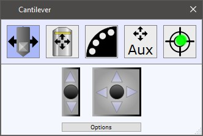
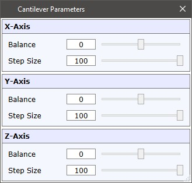
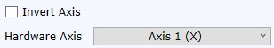

|
惯性驱动控制
|
此对话框可从 附加设备 或从 AFM 状态 中访问以进行悬臂梁移动。

惯性驱动用于移动悬臂梁、激光输出调整镜或辅助设备。
可以使用 UI摇杆控制 或 EasyLink控制器 来移动惯性驱动。
按下箭头将执行单步移动。
如果轴移动不对称或某个方向根本不移动，请打开选项并调整平衡或步长：

辅助惯性驱动
对于辅助惯性驱动，每个轴有一些更多设置：

反转轴
反转轴的移动方向。
硬件轴
可定义使用摇杆/EasyLink时应控制哪个硬件轴。